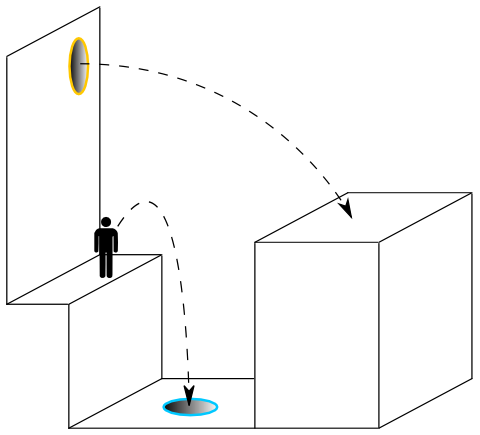
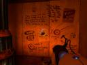

Szerdán megvettem a Half-Life 2 Orange Boxot, ami magába foglalja többek között a Valve Corporation Portal nevű játékát. Ha jól emlékszem, valamikor tavaly ősszel/télen jött ki, már akkor is érdekelt a dolog, hogy milyen is lehet, meg hogy mi is ez egyáltalán. Mint ahogy a HL2, ez is a Valve Source motorját használja, first-person nézetes játék. Ma jutottam oda, hogy kipróbáljam. Kora délután már majdnem a végén jártam, legalábbis azt hittem. Red átjött este, hogy ő is szemügyre vegye, ebből pedig az lett, hogy végigtoltuk, gáz kifejezéssel élve, kipörgettük.
Egyből az juthatna ez ember eszébe, hogy ez megint valami sima klisé FPS. Ez nem igaz. Ott kezdődik a dolog, hogy ellenfelek nagyon nincsenek is, jó-jó akad 1-2 drone és a főellenség, de róla csak később. Egy Chell nevű lánnyal kell végigmenni 19 tesztpályán, ahol egyetlen segítségként egy portálpisztolyt használhatunk. A játék során egy számítógép hangja kísér végig, és mondja, hogy mit szabad, és mit nem kéne. A portálfegyver lényege, hogy átjárókat lehet nyitni a falakon, termeken, folyosókon, de nem csak ennyi. Ha például nyitunk egy portált a falon és egy másikat lent, az alattunk tátongó szakadék szélén, a lenti portálba beugorva végül a faltól akár 10-20 métert is ugorhatunk. Ezt elég nehéz így elmagyarázni, remélem segít az alábbi ábra, de ez a videó mindenképp.

A legels≈ë p√°ly√°k teljesen altat√≥ak, r√©gi hardk√≥r g√©mernek kicsit gyeng√©k is voltak. Az els≈ë n√©h√°ny ut√°n viszont beindul a j√°t√©k, √©s egyre √©rdekesebb puzzle-okat kell megoldani, hogy t√∫l is √©lj√ºk azokat. K√ºl√∂n√∂sen j√≥ a 18. test chamber v√©g√©n lev≈ë “libik√≥k√°s” megold√°s (az√©rt tettem id√©z≈ëjelbe, mert semmi k√∂ze a libik√≥k√°hoz, de nekem az jutott eszembe). Az igazi kaland viszont a 19-es (√©s egyben utols√≥) tesztp√°ly√°n j√∂n, de miel≈ëtt erre r√°t√©rn√©k, meg kell, hogy eml√≠tsek m√©g m√°st is. Nevezetesen, hogy a 18. p√°ly√°n a g√©p bemondja, hogy nemsok√°ra v√©get √©r a tesztsorozat, √©s akkor: “You will be baked, and there will be cake.” Magyarul megs√ºtnek, √©s akkor lesz s√ºti, h√∫dej√≥. Az utols√≥ p√°lya pedig azzal √©r v√©get, hogy egy mozg√≥ platformon √°llunk √©s megy√ºnk a kemenc√©be (t√©nyleg!), v√©g√ºl siker√ºlt port√°lt nyitni a falba. Sz√∂k√©s! A k√∂zponti sz√°m√≠t√≥g√©p persze megpr√≥b√°l lebesz√©lni, de port√°lpisztolyunkkal v√©g√ºl siker√ºl eljutni hozz√°, ahol mag√°t a k√∂zponti g√©pet sz√©tkapva (azt is szigor√∫an a port√°lpisztollyal) siker√ºl kijutni a szabadba. Itt √©r v√©get a j√°t√©k, amelyet csod√°s asciik√©pekkel tark√≠tott st√°blist√°t l√°thatunk, mik√∂zben a robot √©nekel, hogy bossz√∫t √°ll majd rajtunk. Zseni√°lis mapok, r√©szletes kidolgozotts√°g, fantasztikus diz√°jn, j√≥ zene (hab√°r nagyon kev√©s). P√°r √≥ra j√°t√©k ut√°n teljesen √≠gy √©reztem magam. Nagyon r√∂vid, ez√©rt az egy√©rt hatalmas fekete pont, ezt lesz√°m√≠tva, h√°thogymondjam… K≈ëkem√©ny.

Reddel nosztalgi√°ztunk egyet, hogy r√©gen milyen sok j√≥ j√°t√©k √©s j√°t√©kc√©g volt, akik j√≥kat csin√°ltak. Ilyen volt p√©ld√°ul a MicroProse, akiknek a Civilizationt, a Railroad Tycoont, Chris Sawyer akinek Transport Tycoon √©s RollerCoaster Tycoon sorozatokat (szint√©n MicroProse, ami k√©s≈ëbb a Hasbro Interactive √©gisze alatt √©lt tov√°bb), a Bullfrog √©s Peter Molyneux, akiknek a Populoust, a Syndicate-et, a Theme Parkot √©s a Doungeon Keepert, valamint a Maxis, akiknek a milli√≥ Sim-j√°t√©kot, k√∂zt√ºk a SimCity-t, SimEarth-√∂t, SimFarmot, SimTowert sat√∂bbit k√∂sz√∂nhetj√ºk. Biztos van m√©g egy p√°r n√©v √©s c√©g, akiket elfelejtettem (ilyen pl. a Doom √©s a Doom2, amik most jutottak eszembe), sorolhatn√°m reggelig. √Ållati j√≥k voltak ezek, √©s ezek k√∂z√ºl majd’ mindegyik j√°t√©kban √©p√≠teni kellett valamit, nagyon j√≥ volt mind. (Petya m√©g mostan√°ban is RollerCoaster Tycoonozik, zseni√°lis j√°t√©k az is.) √âletem legjobb j√°t√©kai viszont a Transport Tycoon √©s a TT Deluxe mellett a Bethesda Softworks The Elder Scrolls III: Morrowindje √©s kieg√©sz√≠t≈ëi voltak. A Morrowindnek k√ºl√∂n postokat lehetne szentelni, hihetetlen√ºl gy√∂ny√∂r≈± j√°t√©k volt, nem csak grafik√°j√°ban, hanem sztorij√°ban √©s hangulat√°ban is.
Egy legutolsó gondolat még (akár hajnalig is írhatnám ezt a postot), a Transport Tycoon szerelmeseinek, ha valaki még nem hallott volna, akkor figyeljen, mert évek óta létezik már a Transport Tycoon Deluxe felélesztett, nyíltforráskódú változata OpenTTD néven. Nem kell félni, ez nem valami klón, ez tökugyanaz a játék, csak még többet tud a réginél.

{kind=link}
{kind=link}
{kind=link}
{kind=link}